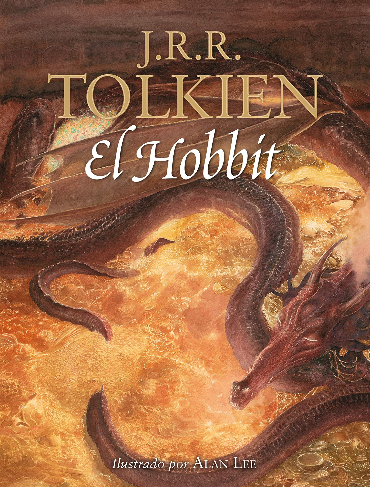

"Cierto que casi siempre se encuentra algo, si se mira, pero no siempre es lo que uno busca."
J.R.R. Tolkien, un profesor de anglosajón en la Universidad de Oxford, se encontró con una hoja en blanco corrigiendo unos exámenes.
En ella escribió "En un agujero en el suelo vivía un hobbit" sin saber ni de dónde le había venido la inspiración ni lo que un hobbit era.
Estábamos aproximadamente en 1929, y aunque no supiera Tolkien qué era un hobbit, la Humanidad no supo hasta mucho después, que el
autor ya había imaginado todo un mundo mítico que sirvió como sustrato para este relato colateral que no tenía más pretensión que la de
entretener a sus cuatro hijos.
Afortunadamente, el relato acabó en las manos de una ex-alumna del profesor que trabajaba en la editorial Allen&Unwin, quien pidió a
Tolkien que terminara el cuento. Corría 1936 cuando el manuscrito llegó a Stanley Unwin, y a su hijo de 10 años. Ante la reacción de
entusiasmo del niño, la novela acabó publicándose en 1937.
La historia comienza un día en el que el hobbit Bilbo Bolsón, habitante de la Comarca, recibe la inesperada visita del mago Gandalf
y de una compañía de trece enanos, liderada por Thorin Escudo de Roble, y compuesta por Balin, Glóin, Bifur, Bofur, Bombur, Dwalin,
Ori, Dori, Nori, Óin, Kíli y Fíli.15 Los enanos necesitaban un miembro más en el grupo, un saqueador experto, para poder llevar a
cabo su plan: alcanzar Erebor, derrotar al dragón Smaug y recuperar el reino y su tesoro. Gandalf les había recomendado para esta
misión a Bilbo y de esta forma el hobbit se ve envuelto en la aventura.
De camino a las Montañas Nubladas, la compañía entró en el Bosque de los Trolls. Allí se encontraron con un grupo de tres trolls
de los que se libraron gracias a la astucia de Gandalf. El mago, conociendo el punto débil de estas criaturas, los distrajo hasta
el amanecer, momento en el cual se convirtieron en piedra por el efecto de la luz del sol. En la guarida de los trolls, la compañía
encontró unas espadas del antiguo reino élfico de Gondolin. Thorin cogió a Orcrist, la espada de Ecthelion, capitán de la ciudad,
y Gandalf a Glamdring, la espada que pertenecía al rey Turgon. A Bilbo le dio una daga (aunque él podía usarla como espada por su
estatura) a la que llamó Dardo. Poco después, llegaron a Rivendel, la tierra gobernada por el medio elfo Elrond, quien les ayudó a
descifrar el mapa del tesoro de Smaug y las inscripciones de runas que tenían las espadas.
Ya en las Montañas Nubladas, una tormenta les obligó a resguardarse y fueron a parar a una caverna llena de trasgos que les
persiguieron, haciendo que Bilbo se perdiese. Tras encontrar un misterioso anillo, el hobbit llegó a la orilla de un lago
subterráneo, donde vivía una criatura llamada Gollum. Este le desafió a un juego de acertijos. En el caso de que Gollum ganara, se
comería a Bilbo, y si no, guiaría al hobbit hasta la salida. Tras perder, Gollum se negó a cumplir su promesa y fue en busca de su
anillo para matar a Bilbo, pero este había descubierto que la joya le volvía invisible cuando se la ponía y gracias a ello logró
escapar y reunirse con sus compañeros. De nuevo un grupo de trasgos y huargos les persiguieron, pero gracias a que las águilas
gigantes les rescataron, consiguieron huir.
Habiendo descendido ya de las montañas, la compañía llegó a la casa de Beorn, un hombre con la capacidad de convertirse en oso.
Este les prestó armas y ponis para que pudieran llegar al Bosque Negro. Una vez allí, Gandalf tuvo que dejarlos por un tiempo.
Dos veces fueron apresados los enanos, una por las arañas gigantes y otra por los elfos del bosque, gobernados por el rey Thranduil,
pero Bilbo, que escapó haciéndose invisible con el anillo, logró rescatarles.
La compañía llegó por fin a Esgaroth, la Ciudad del Lago, desde donde se encaminaron hacia Erebor. Una vez allí, Bilbo logró entrar
a la guarida de Smaug gracias al anillo y se llevó una copa. El dragón, creyendo que los hombres del Lago eran los ladrones de la
copa, se dirigió a la ciudad dispuesto a destruirla, pero Bardo, príncipe de la Ciudad de Valle, logró matarle al clavarle la Flecha
Negra en la única parte de su vientre que no estaba cubierta de piedras preciosas.
Fue entonces cuando tanto los hombres de Esgaroth y de Valle como los elfos del Bosque Negro se dieron cuenta de que el tesoro que
guardaba Smaug se había quedado sin dueño. Al llegar a Erebor descubrieron que los enanos habían colocado defensas en la puerta
principal, pues el cuervo Roäc les había informado de sus intenciones y Thorin, quien creía que el tesoro era suyo por derecho, se
negó a realizar cualquier tipo de negociación. Mientras los hombres y los elfos asediaban la montaña, los enanos buscaron la Piedra
del Arca, el objeto más preciado por Thorin de todo el tesoro, pues no sabían que esta estaba en poder de Bilbo y que la mantuvo
escondida por miedo a las represalias. El hobbit acudió al campamento de los hombres y elfos al anochecer e intentó que Bardo y
Thranduil no atacaran Erebor, entregándoles la Piedra del Arca como ayuda para la negociación.
Al día siguiente se dispusieron a negociar de nuevo con Thorin, mostrándole la Piedra del Arca y provocando su ira al creer que
Bilbo le había traicionado. En ese momento llegó Gandalf y los enanos de las Colinas de Hierro, a quienes Röac había avisado por
orden de Thorin para que acudieran en su ayuda, pero cuando parecía que se iban a enfrentar contra los hombres y los elfos, un
ejército de trasgos y huargos descendió de las montañas y les hizo unirse contra ellos en la que se llamó la Batalla de los Cinco
Ejércitos. Cuando la batalla parecía perdida, aparecieron las águilas y Beorn, quien mató al jefe de los trasgos, Bolgo, haciendo
que su ejército se dispersara y fuera destruido. A pesar de la victoria, Thorin y sus sobrinos Fíli y Kíli, murieron. Los distintos
pueblos se repartieron el tesoro y Bilbo regresó a su casa con una pequeña parte y con el anillo.
Fuente: Wikipedia